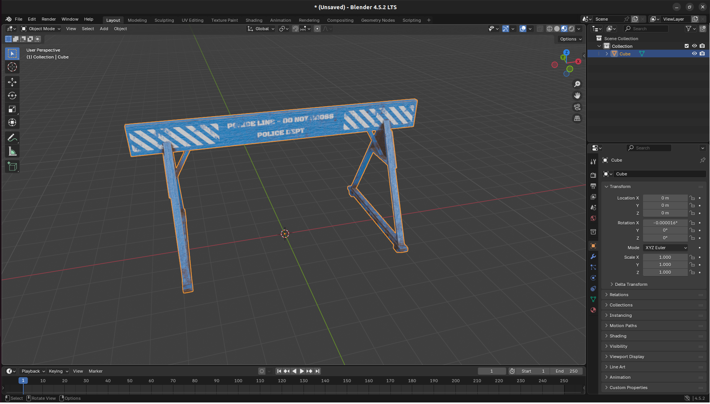
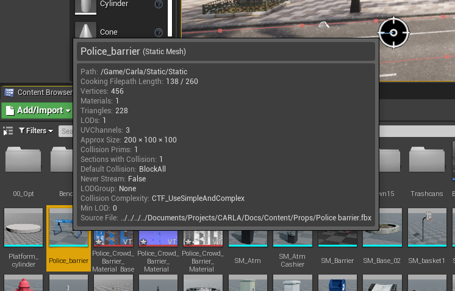

内容创作 - 道具
在 HUTB 中创建自定义道具快捷又简单。请按照以下步骤导入自定义资产并将其用作 HUTB 模拟中的道具。
下载或建模资产
您可以在 TurboSquid 或 Sketchfab 等网站上找到适合您用例的现成 3D 资产（请务必检查其许可证是否适合您的预期用途）。或者，如果您擅长 3D 建模，您可以选择在 Blender 或 Maya 等 3D 建模应用程序中对物体进行建模。

在本例中，我们从 Sketchfab 下载 了一个拥有知识共享许可的资产。首先，将该资产导入 Blender 进行检查，确保其符合我们的预期用途。为了在 HUTB 中使用，我们需要对该素材进行一些修改：
- 缩放: 该资产过大（5米高），为了满足我们在 HUTB 中的预期用途，需要将其缩小到1米高。导出前，请在 Blender 中仔细检查尺寸。
- 几何原点: 此资产的几何原点位于地平面上方。我们将其移至场景原点，因为这将作为 HUTB 模拟中道具的锚点。
如果模型尚未采用 FBX 格式或需要修改，请从 Blender 或您喜欢的 3D 应用程序将其导出为 FBX。
导入资产到虚幻编辑器
现在我们有了 FBX 格式的资源，可以将其导入 HUTB 内容库了。在 HUTB 源代码库的根目录中运行 make launch 命令，启动 HUTB 编辑器。打开编辑器后，导航到内容目录中的相应位置（本例中为 Content/Carla/Static/Static）。将 FBX 文件拖到内容浏览器中，并使用默认选项导入。导入完成后，我们可以在内容文件夹中看到新道具的静态网格体：

将新的道具添加到 JSON 配置中
要将资产注册为道具并通过 HUTB API 使用它，我们需要将其添加到配置文件 Default.Package.json 中，该文件位于 HUTB 源代码库根文件夹内的 Unreal/CarlaUE4/Content/Carla/Config 目录中。在此文件中添加一个与现有条目格式匹配的新条目，并定位您导入的静态网格文件（您可以将鼠标悬停在内容浏览器中导入的资源上来仔细检查路径）：
{
"props": [
{
"name": "ATM",
"path": "/Game/Carla/Static/Static/SM_Atm.SM_Atm",
"size": "Medium"
},
...,
{
"name": "PoliceBarrier",
"path": "/Game/Carla/Static/Static/Police_barrier.Police_barrier",
"size": "Medium"
}
]
}
在模拟中使用新道具
在 HUTB 编辑器中使用运行命令启动模拟。运行后，打开 Python 脚本或 notebook。新道具将被分配 ID static.prop.policebarrier（即 static.prop.<name_lower_case>）。
过滤您在 Default.Package.json 中的名称字段中输入的小写名称，您将找到新道具的新蓝图 ID：
import carla
client = carla.Client()
world = client.get_world()
bp_lib = world.get_blueprint_library()
for bp in bp_lib.filter('*policebarrier*'):
print(bp.id)
这应该返回：
>>> static.prop.policebarrier
现在，您可以按照与原生 HUTB 道具相同的方式将新道具放置在模拟中：
barrier_bp = bp_lib.find('static.prop.policebarrier')
for spawn_loc in spawn_locations:
world.spawn_actor(barrier_bp, spawn_loc)

使用新道具制作 HUTB 包
使用上述步骤将一个或多个道具导入 HUTB 后，请确保已保存引擎编辑器界面中的所有内容。然后，您可以使用以下命令导出包含新道具的新 HUTB 包：
make package #ARGS="--python-version=3.X" - for a specific Python version
导出过程完成后，导出的地图包将保存为压缩存档：
- Linux:
.tar.gz存档在${CARLA_ROOT}/Dist目录 - Windows:
.zip存档在${CARLA_ROOT}/Build/UE4Carla目录
通过 API 使用静态网格作为道具
HUTB 内容库中已包含的静态网格可以通过 Python API 使用 static.prop.mesh 蓝图指定为道具。在 HUTB 内容浏览器中找到所需的网格并记下其路径。在本例中，我们将从 /Game/Carla/Static/Car/4Wheeled/ParkedVehicles 目录中选择道奇 Charger 模型。

我们可以使用以下代码将车辆作为道具放置在地图中：
# 设置所选静态网格的路径
mesh_path = '/Game/Carla/Static/Car/4Wheeled/ParkedVehicles/Charger/SM_ChargerParked.SM_ChargerParked'
spawn_point = carla.Transform(carla.Location(x=52.7, y=127.7, z=0), carla.Rotation())
# 使用 static.prop.mesh bp 并设置 mesh_path 属性
parked_vehicle_bp = bp_lib.find('static.prop.mesh')
parked_vehicle_bp.set_attribute('mesh_path', mesh_path)
parked_vehicle = world.spawn_actor(mesh_bp, spawn_point)

只要包中包含指定静态网格的正确位置，此方法就适用于 HUTB 的源代码编译版本和 HUTB 的打包版本。